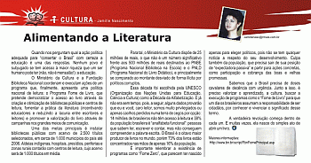
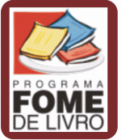
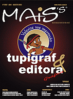

Quando nos perguntam qual a ação política adequada para “consertar o Brasil” com certeza a educação é uma das respostas. Nenhum povo é subjugado se tem acesso à maior riqueza que um ser humano pode ter (não, não é mensalão!): a educação.
O Ministério da Cultura e a Fundação Biblioteca Nacional coordenam e executam ações de um programa que, finalmente, apresenta uma política nacional de leitura: o Programa Fome de Livro, que pretende democratizar o acesso ao livro através da criação e otimização de bibliotecas públicas e centros de leitura, fomentar a prática da literatura (incentivando educadores e reduzindo a lacuna entre escritores e leitores) e promover a valorização do livro através de campanhas nos grandes meios de comunicação.
Uma das metas principais é instalar bibliotecas públicas com acervo de 2.500 títulos selecionados, em cerca de 1.000 municípios do país até 2006. Aldeias indígenas, hospitais, presídios, periferias e zonas rurais contarão com centros de leitura, cujo acervo será de 1.000 títulos em média.
Para tal, o Ministério da Cultura dispõe de 25 milhões de reais, o que não é um número significativo frente aos 500 milhões de reais destinados ao PNBE (Programa Nacional Biblioteca na Escola) e o PNLD (Programa Nacional do Livro Didático), e principalmente se comparado ao montante desviado de forma ilícita por políticos corruptos.
Essa década foi escolhida pela UNESCO (Organização das Nações Unidas para Educação, Ciência e Cultura) como a Década da Alfabetização. E já não era sem tempo, pois, a seguir, alguns dados provarão que eu e você, caro leitor, somos muito privilegiados ou apenas caolhos perdidos numa terra de cegos por opção: 14 milhões de brasileiros não têm acesso à leitura e 38% da população brasileira é “analfabeta funcional”: pessoas que sabem ler, escrever e contar, mas não conseguem compreender a palavra escrita. O Brasil é o oitavo maior produtor de livros no mundo, porém 73% dos livros estão concentrados nas mãos de apenas 16% da população.
É importante relembrar a existência de programas como “Fome Zero”, que parecem ter nascido apenas para eleger políticos, pois não se tem qualquer notícia a respeito do seu desenvolvimento. Culpa também da população, que precisa sair de sua posição de “expectadora passiva” e partir para ações concretas, como participação e cobrança das boas e velhas promessas.
Sabemos que o Brasil precisa de doses cavalares de decência com urgência. Junto a isso, é preciso valorizar o aprendizado, a cultura, buscar a execução de programas como o “Fome de Livro” para que um dia os brasileiros assumam a responsabilidade de ser cidadãos, por conhecer e vivenciar o significado desse termo.
A verdadeira revolução começa dentro de cada um. E muitas vezes, ela nasce do simples ato de abrir um livro.
Maiores informações: http://www.bn.br/script/FbnFomePrincipal.as